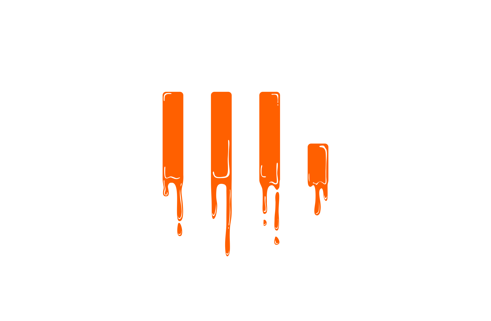
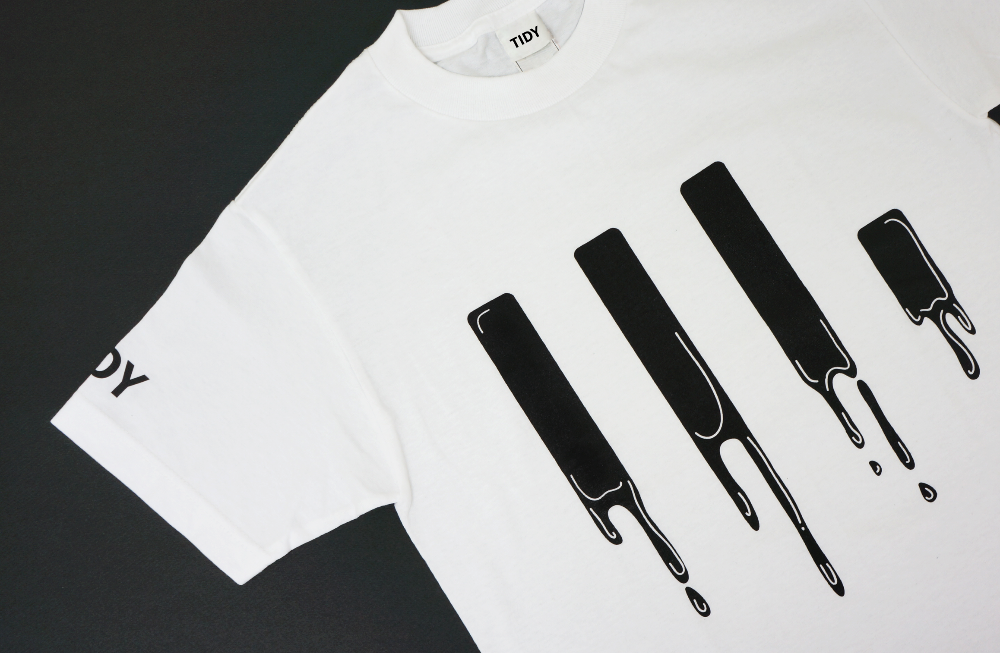
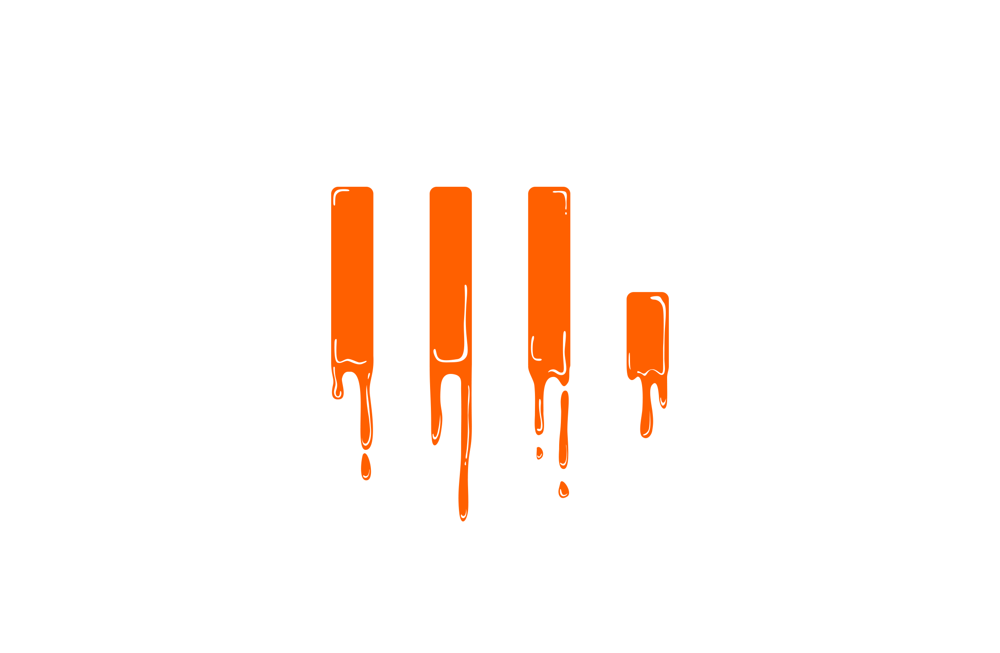
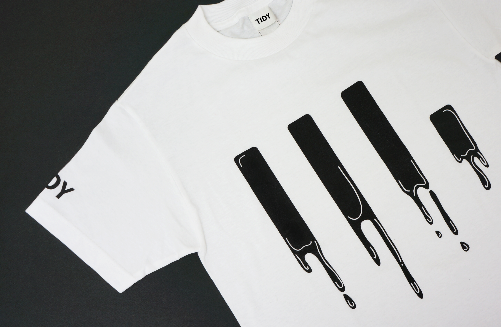
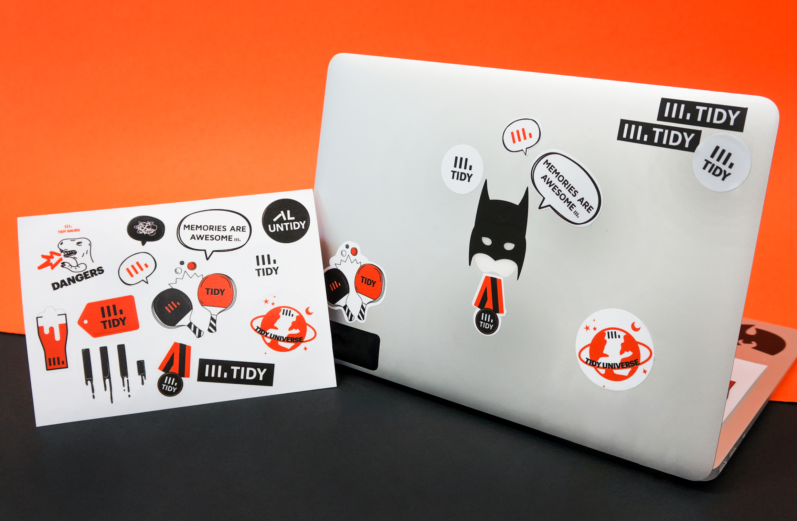
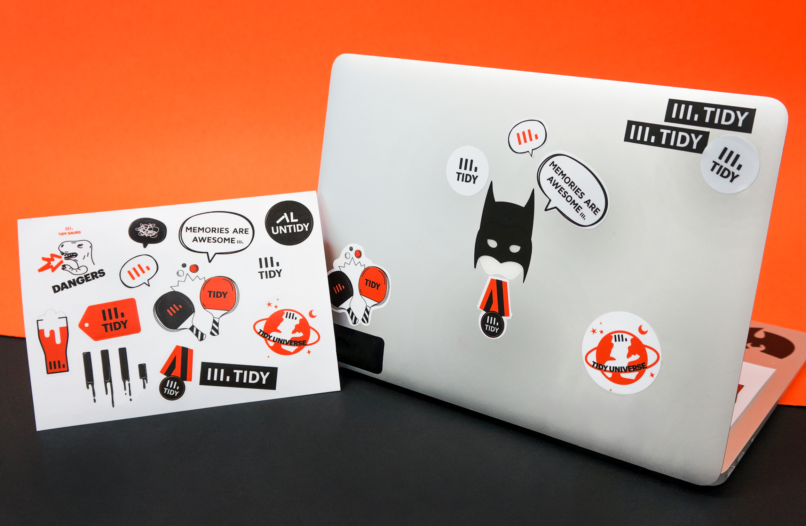

- Client — TIDY INC.
- Project — Art direction + BI design + Web design
- Year — 2014
- Website — www.tidyinc.net
- TIDY INC.
- covworks는 Tidy 서비스를 출시하고, Tidy 서비스에 더욱 집중하고자 회사명을 TIDY INC.로 변경하였습니다. TIDY INC. 프로젝트는 새로운 회사의 아이덴티티이자 Tidy의 새로운 브랜드를 만드는 프로젝트였습니다. 로고는 TIDY의 대문자의 세로획을 이용해 사진앨범이 정렬된 모습을 의미하며, 새 아이덴티티 구축과 함께 웹사이트, 명함과 스테이셔너리 등을 제작했습니다.
 



 
